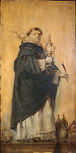

|  |
|---|
NOTA EDITORIS: Etsi multae notitiae de scriptoribus Ordinis Praedicatorum in hac chronica concordant cum aliis in Tabulis Stamsensi et Upsalensi, ita ut merito sustinuit H. D. Simonem omnes tres derivari ab una fonte; tamen non credo illam esse originem catalogi operum Thomae in hac chronica. Ob illam tamen vetustam radicem communem censui et hunc serum documentum esse includendum in eadem collectione. Tres recensiones edidit Albertus huius chronicae, annis scilicet 1504, 1506, et 1516, omnes Venetiis per Lazarum de Soardis, ex quarum postrema iterum edidit fragmenta aliqua notisque instruxit R. Creytens. Item est copia manuscripta editionis anni 1506, non sine mutationibus, asservata in Archivo Generali O.P., Libro QQ pp. 427-487, cuius partes praecipuae ediderunt E. Martène et U. Durand: quam in notis nostrae editionis significamus siglo M.

(...)
Horum praecedentium magistrorum Umberti videlicet et Johannis tempore claruit etiam aliud luminare majus, scilicet sanctus Thomas de Aquino, qui genere nobilissimus ... Ex hac ergo nobilissima primogenie ortus beatissimus Thomas ordinem Praedicatorum infra annos pubertatis ingressus est, a quo nullis parentum blanditiis vel tribulationibus potuit amoveri, sed post plures eorum persecutiones, missus fuit Coloniam ad studendum sub magistro Alberto magno. Quo in loco existens, dum esset devotus studiosus et taciturnus, nec die nec nocte chorum neglexit, refectorium et alia communia frequentans, nihil in eis fastidiebat, quo effectum ut praeclarissimae scientiae apicem apprehenderit.
Unde missus Parisios pro bacalaurio cursum suum laudabiliter exercuit, cum tanta omnium admiratione, et praeclaro novoque legendi modo, quod schola eius quotidie replebatur. [1] Quo tempore scripsit super quatuor sententiarum libros.
Triginta autem annorum existens, factus est sacrae theologiae magister, in quo magisterio annis fere viginti permanens, multa preclara et magna conscripsit volumina, videlicet:
[2] summam theologie quattuor magnis voluminibus distinctam;
questiones multas, videlicet [3] de veritate;
[4] de anima;
[5] de potentia Dei;
[6] de malo;
[7] de virtutibus.
[8] Summam contra gentiles.
[9] Quodlibeta XI;
[10] Super Iob;
[11] Esaiam;
[12] Hieremiam
[13] et Trenos.
[14] Super quinquaginta primos psalmos psalterii;
[15] super Cantica;
[16] super Mattheum;
[17] super Ioannem;
[18] super omnes epistolas Pauli.
[19] Opus continuum in quattuor evangelistas.
[20] Opuscula multa quae uno magno et insigni volumine continentur.
[21] Dictavit fallacias in logica.
[22] Scripsit super librum Peryermenias;
[23] posteriorum;
[24] physicorum;
[25] de anima;
[26] de celo et mundo;
[27] de generatione;
[28] methaurorum
[29] et super libros ethicorum,
[30] politicorum
[31] ac metaphysice Aristotelis.
[32] Super Dionysium de divinis nominibus
[33] et de celesti hierarchia.
[34] Super Boetium de trinitate
[35] et de hebomadibus.
[36] Officium corporis Christi ad mandatum Urbani pape IV.
Hec et multa alia opera preclara edidit doctor hic gloriosus que brevitatis causa pretermituntur.